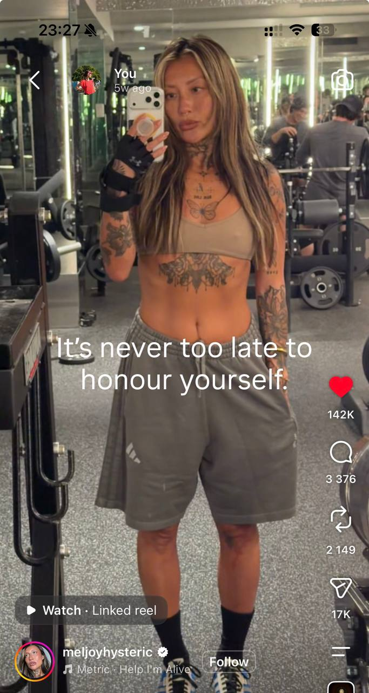
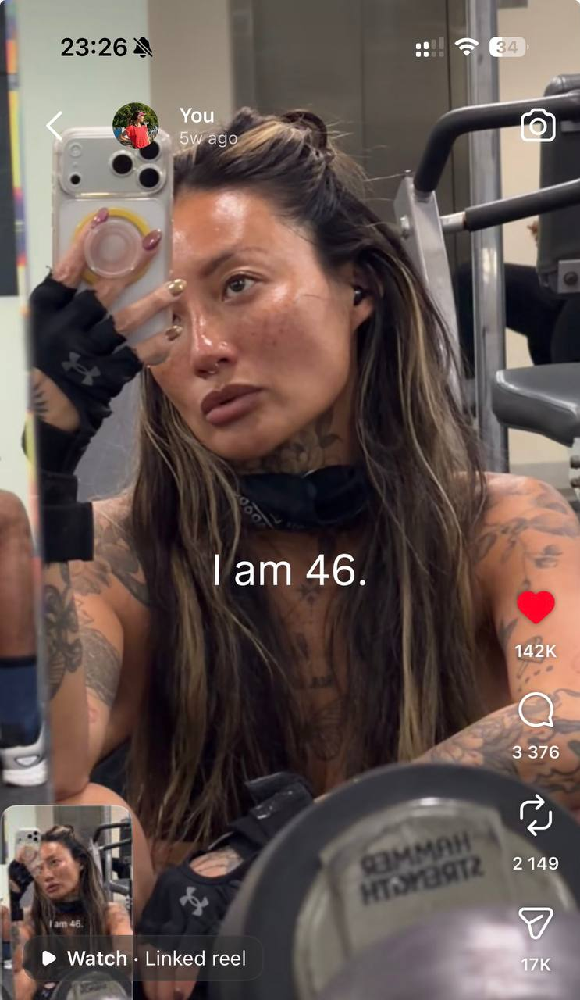
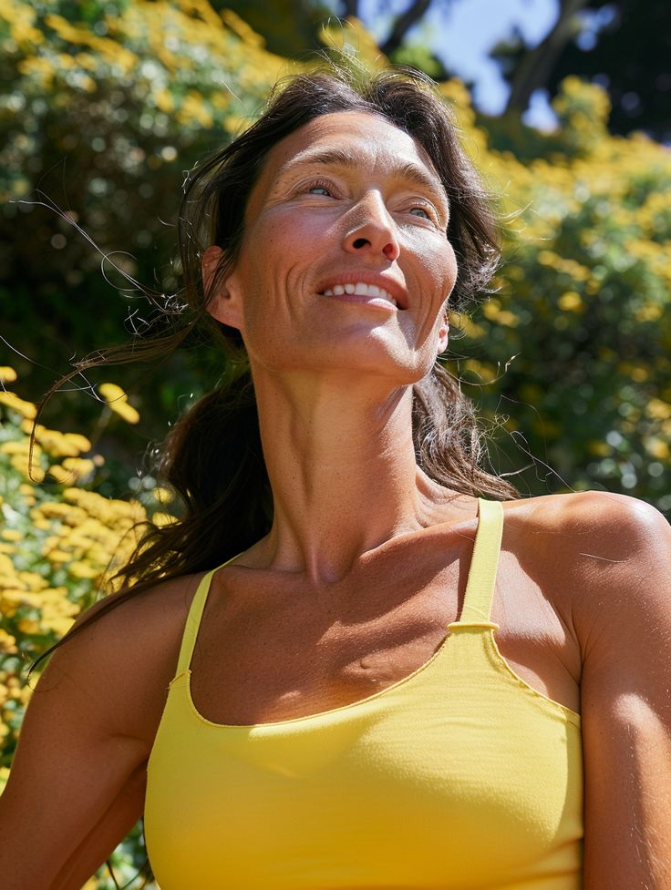
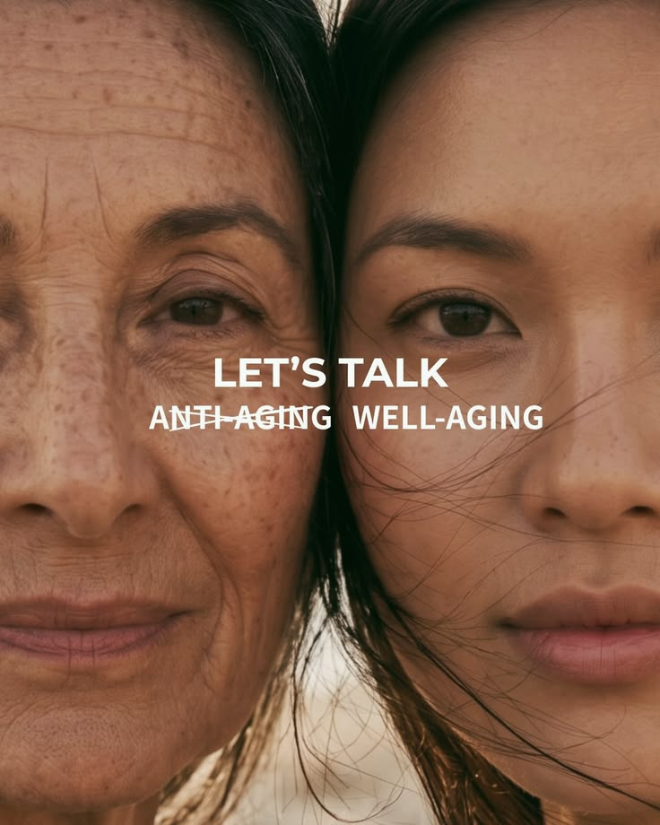
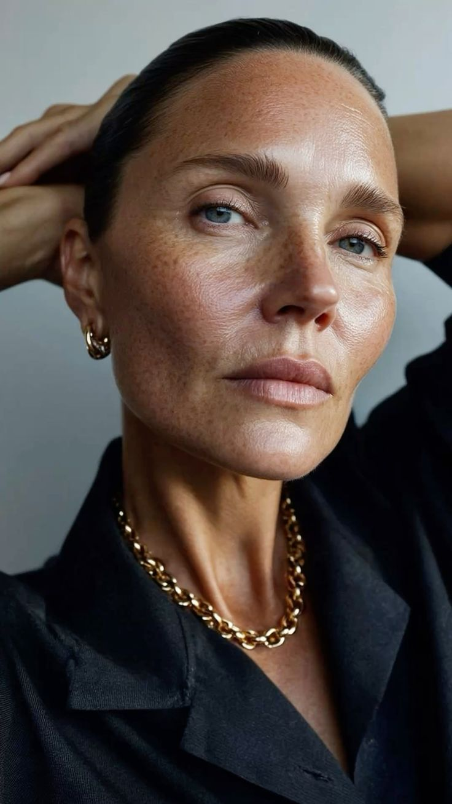
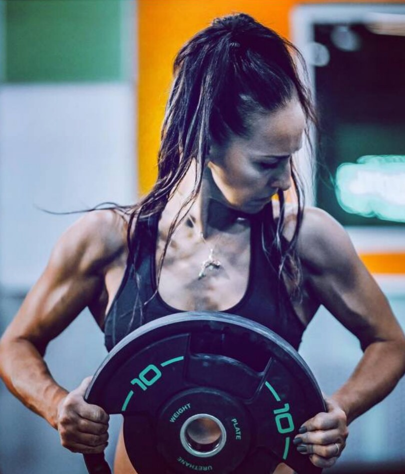
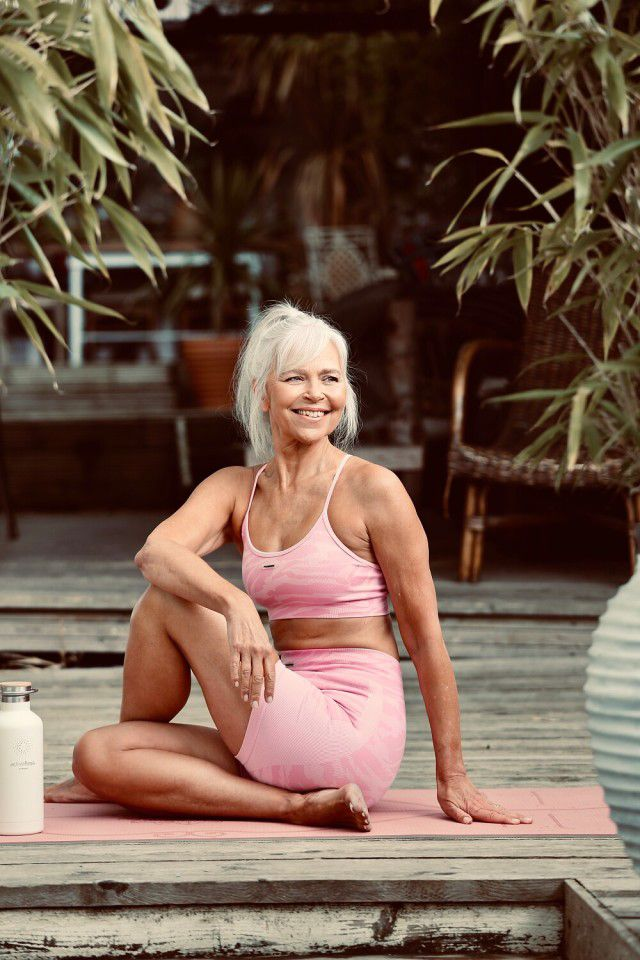
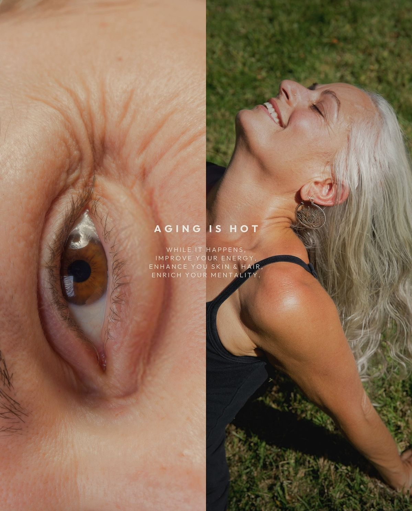
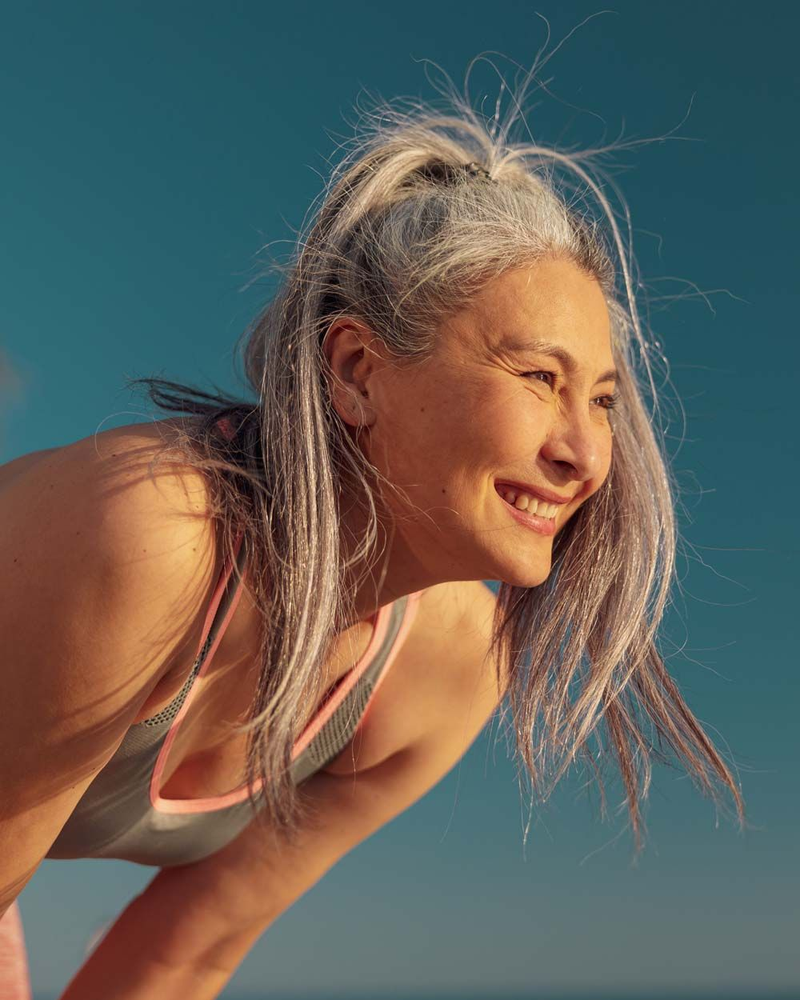

Сила
Мышцы, кости и функциональность.
Курс для женщин 45+, которые хотят стать сильнее, выносливее и увереннее в своём теле, наладить питание и встроить тренировки в обычную жизнь.
Термин популяризировала британская журналистка Элеанор Миллс: так она предлагает позитивно переосмыслить женщин в середине жизни — опытных, самостоятельных и ещё очень далёких от «финала».
Настройки меняются. Жизнь остаётся твоей.
Четыре опоры помогают увидеть возможности своего тела — и расширить их.
Мышцы, кости и функциональность.
Композиция тела, объёмы и внешний вид.
Питание, сон, выносливость и восстановление.
Активная жизнь и устойчивые привычки.
Мы помогаем заметить, что изменилось, отделить нормальные процессы от симптомов, требующих помощи, и перенастроить систему под реальную жизнь.
Не обязательно новичок. Может бегать, ходить в зал, играть в падел, много ходить и при этом не понимать, почему восстановление или композиция тела изменились.
Работа, близкие, поездки, бытовая нагрузка. Курс должен встраиваться, а не становиться ещё одним проектом, в котором можно отстать.
Что относится к перименопаузе? Когда идти к врачу? Что действительно могут тренировки и питание — а чего обещать не должны?
Её интересуют сила, удовольствие, секс, внешний вид, амбиции и новые планы.
Можно не замечать изменений, переживать выраженные симптомы, жить после операции или только начинать задаваться вопросами.
Ей нужны полноценные силовые и прогрессия нагрузки — с адаптациями по самочувствию, опыту и ограничениям, а не «зарядка для дам».
Queenager — не уровень спортивности, фигура или стиль жизни. Это разные женщины 45+, которым важно оставаться в контакте с телом и продолжать жить свою жизнь.









Большинство предложений находится где-то между санаторием и обещанием «вернуть прежнюю себя». Мы предлагаем доказательный курс про сильное тело и взрослую свободу — без эйджизма, гормонального детерминизма и обещаний вернуть 25-летнюю себя.
Курс прямо нормализует менопаузу, сочетает дыхательные практики, упражнения и знания о периоде.
Есть отдельные материалы о перименопаузе, питании, коже, витаминах и тренировках, но чаще это каталог контента, а не единый маршрут.
Сила, мобильность, тазовое дно, кардио, врачебная экспертиза и выбор тренировки по самочувствию.
Прогрессивная силовая работа, адаптации, коучинг и фокус на мышцах, костях и устойчивом режиме.
Не сюсюкаем, не пугаем, не превращаем любое ощущение в симптом менопаузы.
На каждой неделе развиваются три линии: питание; тренировки; восстановление и управление нагрузкой. Дополняют их практические и экспертные материалы.
Наблюдение без попытки сразу всё исправить: рацион, энергия, голод, насыщение и самочувствие. Выбор личных показателей прогресса.
Домашние силовые тренировки и оценка текущей нагрузки. Один общий вход без зала.
Перименопауза, менопауза и постменопауза. Личная карта изменений и симптомы, с которыми стоит обратиться к врачу.
Гинеколог: «Что происходит с телом — и почему не всё нужно объяснять гормонами».
Регулярность и полноценный приём пищи. Белок как часть обычного рациона, а не отдельный фитнес-проект.
Домашние силовые продолжаются, добавляется работа с прогрессией: повторения, сопротивление и качество техники.
Мышечная масса, сила и мощность: что действительно меняется и что можно поддерживать тренировками.
Тренер или спортивный врач: «Почему после 45 всё ещё можно и нужно становиться сильнее».
Как он связан с тем, что происходило утром и днём, достаточностью питания, усталостью, стрессом и запретами. Варианты позднего ужина, помощь в моменте и анализ повторяющегося сценария без чувства вины.
Домашний трек усложняется. Появляется дополнительный трек для зала и понятный выбор рабочих весов.
Костная ткань, суставы, баланс и ударная нагрузка: кому подходят прыжки и чем их заменить.
Кальций, витамин D и белок: где искать в рационе, когда обсуждать анализы и добавки с врачом.
Завтраки за пять минут, варианты позднего ужина, готовка на два-три дня, покупные обеды, сладкое и перекусы.
Домашний и заловый треки продолжаются. Добавляется кардио и шкала, которая помогает менять нагрузку по состоянию.
Сон, приливы, утомление и стресс. Как адаптировать неделю, не сворачивая программу целиком.
Решения для обычной загруженной недели и подборка сервисов доставки готовой еды.
Композиция тела без жёсткой диеты. Клетчатка, алкоголь и индивидуальные связи между едой и симптомами.
Продолжение прогрессии в обоих треках. Отдельный блок для тазового дна, а не запрет на бег, прыжки или тяжёлые веса.
Недержание, чувство тяжести, сухость, дискомфорт и сексуальное здоровье: что нормально обсуждать и где искать помощь.
Специалист по тазовому дну и гинеколог: «Не терпеть и не ограничивать жизнь».
Личные ориентиры и конструктор рациона для обычных дней, поездок, высокой нагрузки и периода без тренировок.
Финальные тренировки обоих треков, оценка прогресса и сборка следующего цикла на 6–8 недель.
Как продолжить тренироваться самостоятельно, вернуться после пропуска и не считать перерыв возвращением в исходную точку.
Сравнение личных показателей: веса и объёмов, силы, выносливости, энергии и регулярности.
Все начинают дома. С третьей недели можно остаться в домашнем треке или подключить зал.
В упражнения уже заложены замены с учётом самочувствия, опыта и ограничений.
Сила, выносливость, объёмы, энергия и регулярность тоже помогают увидеть изменения.
В финале появляется понятный путь для самостоятельных тренировок и возвращения после перерыва.